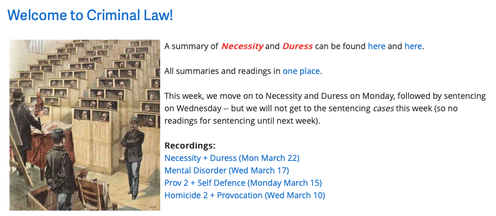
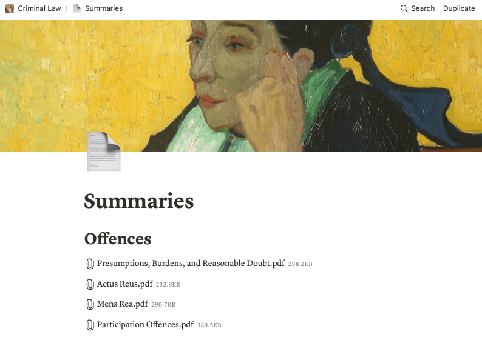

Is Notion better than Moodle?
I have used Moodle since I began teaching in 2005. Until recently, it seemed indispensable: a free platform that made a whole repository of docs available to students. It was stable, relatively secure, easy to understand, and functional. But it’s showing its age.
Notion may be a far better tool for my purposes, and I suspect for other profs or teachers who use ‘learning management systems’ like D2L, Moodle, or Google Classroom primarily as a place to hand out slides, notes, and links. (If you make frequent use of quizzes, assignment drop boxes, etc, that’s a different story.)

The workflow conundrum I was running into was this: before every class, I tweak my slides and upload them. It’s a seven or eight step process to replace last year’s file with the new one: login to Moodle, click edit, find the place-holder for the doc (under ‘Topic 6’), click-edit, delete the old doc, upload the new one, and then click save. It’s not the end of the world, but if you have two or three docs per class, and, say, two or three classes a day, it adds up.
Notion makes most of this pain go away. It isn’t easy to describe Notion. It’s something like a cross between OneNote or the Notes app on MacOS and those old instant-website-creation apps current in the early 2000s (before sites like Wix and Squarespace came along). Notion does a lot more, especially with databases, but the part of it I want to highlight is the instant page and site creation feature.
Every note or page you create in the Notion app on your desktop can be turned into a webpage at the click of a button. Every note or page you create can be linked to other notes and pages. A single page can have links to several pages and so on.
But the killer feature is that you can add docs and files to your page/note by simply dragging and dropping the file. Once in place, the doc becomes a link. In short, you can replicate the whole of your Moodle site — if you were using Moodle mainly as a document repository — in a handful of pages in Notion, and then just click a button to put them online.

You have to be comfortable with open-access, but the settings allow your Notion pages to not be indexed by search engines. (Not sure how reliable that is!) I’ve now been teaching long enough that I’m not concerned about the public circulation of my slides and notes. On the contrary, the more people they might assist the better.
Having discovered Notion only a few weeks ago, I’m still in the early stages of experimentation with it, using it in one course alongside Moodle. But in the fall, I plan to migrate all my courses to Notion. It looks to be a far more efficient and elegant workflow. I can make changes to the layout and content of my class website as easily as I edit docs in Word or OneNote, and uploading will be a one-step process.
The next challenge will be to sort out a quick and easy way to point students to my Notion page for the first time. Notion puts any page on the web, but with a long, number-heavy URL. I might try creating a portal page, using a static site hosted (free) at GitHub Pages, so that students always have a start page with a short URL. More on that to come…